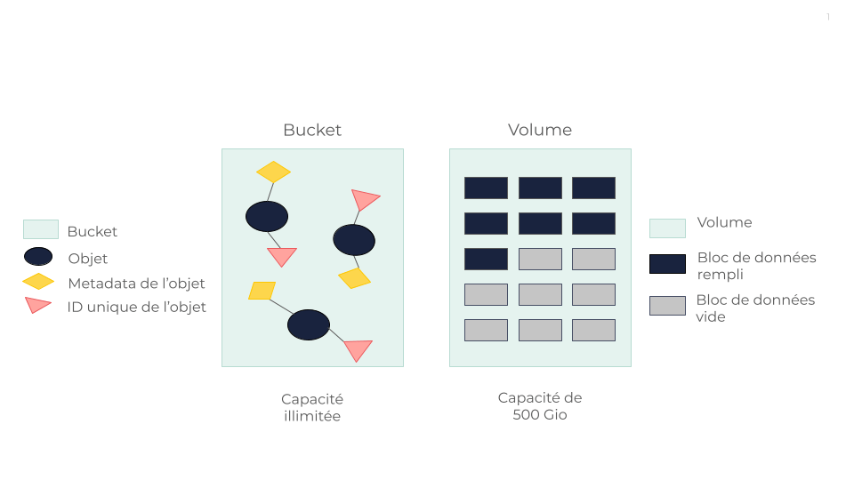

Object Storage vs Block Storage
Cette page a pour but de vous aider à comprendre les principales différences et avantages entre les solutions OUTSCALE Object Storage et Block Storage. Cette comparaison se concentre principalement sur les différences fondamentales en matière d’architecture, de performance, de scalabilité et de compatibilité aux cas d’utilisation. En examinant ces aspects, nous visons à fournir une compréhension claire des points forts de chaque type de stockage, ce qui vous aidera à prendre des décisions éclairées en fonction de vos besoins spécifiques.
Définitions

Object Storage
OUTSCALE Object Storage (OOS) organise les données sous forme d’unités distinctes appelées objets, chacune étant associée à des metadata et à un identifiant unique. Cela facilite le stockage et la restauration des données dans les systèmes distribués. Les objets sont stockés en blocs puis distribués dans la solution RING de Scality - une architecture de stockage d’objets en forme d’anneau basée sur une approche peer-to-peer. Pour en savoir plus, voir Mécanismes de résilience d’OOS.
Du point de vue de l’utilisateur, OOS permet de stocker des données dans des conteneurs appelés buckets. Cela permet de gérer de grandes quantités de données non structurées tout en fournissant des méthodes simples pour récupérer et examiner des listes complètes d’objets et de buckets. Pour en savoir plus, voir Outils pour utiliser OOS.
OOS est donc idéal pour la scalabilité et la gestion des données d’une manière très accessible, en évitant les complexités des systèmes de fichiers hiérarchiques traditionnels.
Block Storage
OUTSCALE Block Storage organise les données en blocs de données de taille fixe, chacun ayant un identifiant unique. Cela permet de stocker et d’accéder aux données dans des unités appelées blocs. Cette méthode traite les volumes de stockage comme des disques durs individuels qui sont accessibles par un système d’exploitation basé sur un serveur par le biais de commandes de bas niveau. Ces blocs peuvent être configurés et formatés avec un système de fichiers, géré par le système d’exploitation, ce qui permet aux applications d’interagir avec le stockage comme s’il s’agissait d’un disque dur local.
Dans une configuration typique de stockage par blocs, comme pour les systèmes NetApp, les disques physiques sont configurés en grands agrégats appelés matrices de disques. Ces matrices de disques apparaissent collectivement comme un volume unique de stockage, qui peut à son tour être segmenté en partitions logiques plus petites qui améliorent la gestion et les performances en répartissant les opérations sur plusieurs disques.
Du point de vue de l’utilisateur, OUTSCALE Block Storage implique la création de volumes qui, au départ, n’occupent pas la totalité de la capacité sélectionnée, mais qui peuvent s’étendre progressivement au fur et à mesure de l’ajout de données. Au fur et à mesure que les volumes se remplissent, les données sont donc redistribuées vers d’autres unités de stockage afin de gérer l’espace de manière efficace. Cette configuration nécessite une certaine anticipation de vos besoins spécifiques en matière de stockage, car les coûts peuvent être plus élevés, mais elle offre des solutions de stockage performantes et scalable adaptées à vos besoins. Pour en savoir plus, voir Travailler avec les volumes.
Tableau de comparaison
| Catégorie | Object Storage | Block Storage |
|---|---|---|
Architecture |
Les données sont gérées sous forme d’objets dans des espaces de noms plats appelés buckets. |
Les données sont organisées en blocs de données de taille fixe, qui sont gérés dans des volumes de stockage. |
Accessibilité |
Accès via AWS CLI (s3api, s3 et s3cmd). |
Accès via Cockpit et les CLI OSC et AWS. |
Accessibilité de la donnée |
Accessible à tout moment et en tout lieu et plus flexible que les solutions dépendantes au matériel. |
Nécessite d’être spécifiquement attaché à une machine virtuelle (VM) pour l’utiliser. |
Mutabilité des données |
Impossible. |
Possible. |
Scalabilité |
Hautement scalable horizontalement, idéal pour de grandes quantités de données non-structurées. |
Hautement scalable. |
Recommendations |
Idéal pour le partage de données entre plusieurs serveurs ; le stockage d’objets peut émuler les systèmes de fichiers. |
Idéal pour les tâches nécessitant de très bonnes performances. |
Compatibilité aux cas d’utilisation |
Idéal pour les données volumineuses, les fichiers multimédias, les sauvegardes et l’archivage. Accessible à distance sur différents réseaux. |
Nécessaire pour les systèmes d’exploitation (OS). Optimal pour les bases de données et les applications nécessitant des écritures continues et intensives. |
Conclusion
Block Storage est conçu pour les environnements où l’accès fréquent et rapide aux données est crucial, ce qui le rend adapté aux systèmes exigeant la persistance des données et une faible latence. Il peut néanmoins ne pas être aussi économique pour des scénarios tels que l’archivage ou la sauvegarde, où les données sont consultées moins fréquemment. Dans ces cas là, Object Storage peut être plus rentable grâce à son modèle de tarification basé sur l’accès plutôt que sur la capacité de stockage.
Object Storage offre plusieurs avantages, en particulier dans les environnements où la croissance des données est imprévisible. Il offre une scalabilité illimitée sans les contraintes physiques des systèmes de stockage en bloc et se caractérise par une conformité API avec des mécanismes tels que l’access key et la secret key (AK/SK). Il n’est donc plus nécessaire de planifier à l’avance la capacité de stockage, permettant ainsi aux entreprises de s’adapter en douceur à l’évolution de leurs besoins en matière de données. En outre, Object Storage sécurise les données dès leur stockage, renforçant efficacement la sécurité des données.
Pages connexes
AWS™ et Amazon Web Services™ sont des marques de commerce d'Amazon Technologies, Inc. ou de ses affiliées aux États-Unis et/ou dans les autres pays.